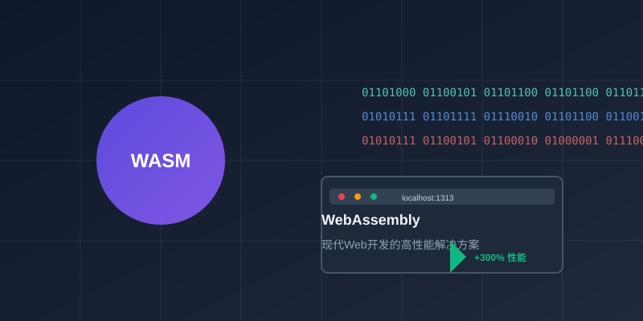

WebAssembly在现代Web开发中的应用实践
WebAssembly（简称WASM）作为一种新兴的Web技术标准，正在彻底改变我们构建高性能Web应用的方式。本文将深入探讨WebAssembly的核心概念、优势以及在实际项目中的应用实践。
什么是WebAssembly？
WebAssembly是一种低级的二进制指令格式，设计用于在现代Web浏览器中高效执行。它并不是要取代JavaScript，而是作为JavaScript的补充，为Web应用提供接近原生性能的执行环境。
核心特性
- 高性能: 接近原生代码的执行速度
- 安全性: 运行在沙箱环境中，确保安全
- 跨平台: 可在所有现代浏览器中运行
- 多语言支持: 支持C/C++、Rust、Go等多种语言
WebAssembly的实际应用场景
图像和视频处理

WebAssembly在图像处理中的应用
在图像处理领域，WebAssembly可以显著提升性能。例如，使用Rust编写的图像滤镜算法，通过WebAssembly在浏览器中运行，可以实现实时的高质量图像处理。
// Rust示例：简单的图像灰度处理
#[no_mangle]
pub extern "C" fn grayscale_image(
input_ptr: *mut u8,
width: u32,
height: u32
) -> *mut u8 {
let len = (width * height * 4) as usize;
let input = unsafe { std::slice::from_raw_parts(input_ptr, len) };
// 灰度处理逻辑
for i in (0..len).step_by(4) {
let r = input[i] as f32;
let g = input[i + 1] as f32;
let b = input[i + 2] as f32;
let gray = (0.299 * r + 0.587 * g + 0.114 * b) as u8;
unsafe {
*input_ptr.add(i) = gray;
*input_ptr.add(i + 1) = gray;
*input_ptr.add(i + 2) = gray;
}
}
input_ptr
}
游戏开发
WebAssembly为浏览器游戏开发带来了革命性的变化。传统的Web游戏受限于JavaScript的性能瓶颈，而WebAssembly使得在浏览器中运行高性能的3D游戏成为可能。
科学计算和数据分析
对于需要大量计算的科学应用，WebAssembly提供了在浏览器中运行复杂算法的能力。例如，在线数据可视化工具可以使用WebAssembly加速数据处理和渲染。
实际开发实践
开发环境搭建
要开始WebAssembly开发，推荐使用以下工具链：
- Rust + wasm-pack: 最流行的WebAssembly开发组合
- Emscripten: 支持C/C++到WebAssembly的编译
- AssemblyScript: TypeScript的超集，专门用于WebAssembly
与JavaScript的互操作
WebAssembly与JavaScript可以无缝协作：
// 加载WebAssembly模块
async function loadWasm() {
const response = await fetch('image_processor.wasm');
const bytes = await response.arrayBuffer();
const { instance } = await WebAssembly.instantiate(bytes);
// 调用WebAssembly函数
const result = instance.exports.grayscale_image(
imageData.data,
imageData.width,
imageData.height
);
return result;
}
性能优化技巧
内存管理
WebAssembly使用线性内存模型，合理的内存管理至关重要：
- 避免频繁的内存分配和释放
- 使用内存池技术减少碎片
- 合理设置初始内存大小
数据传递优化
在JavaScript和WebAssembly之间传递数据时：
- 尽量减少数据拷贝
- 使用共享内存技术
- 批量处理数据以减少调用次数
未来展望
WebAssembly技术仍在快速发展中，未来的重要方向包括：
- 线程支持: 实现真正的多线程并行计算
- SIMD指令: 进一步提升向量运算性能
- GC集成: 简化内存管理
- WebAssembly组件模型: 实现更好的模块化
总结
WebAssembly为Web开发带来了新的可能性，特别是在性能敏感的应用场景中。虽然学习曲线相对陡峭，但其带来的性能提升和跨平台优势使其成为现代Web开发的重要工具。
随着生态系统的不断完善，我们有理由相信WebAssembly将在未来的Web开发中扮演更加重要的角色。
图片建议清单：
- webassembly-cover.jpg: WebAssembly技术概念图，包含二进制代码和浏览器界面
- image-processing.jpg: 图像处理前后对比效果图
- performance-chart.jpg: WebAssembly与JavaScript性能对比图表